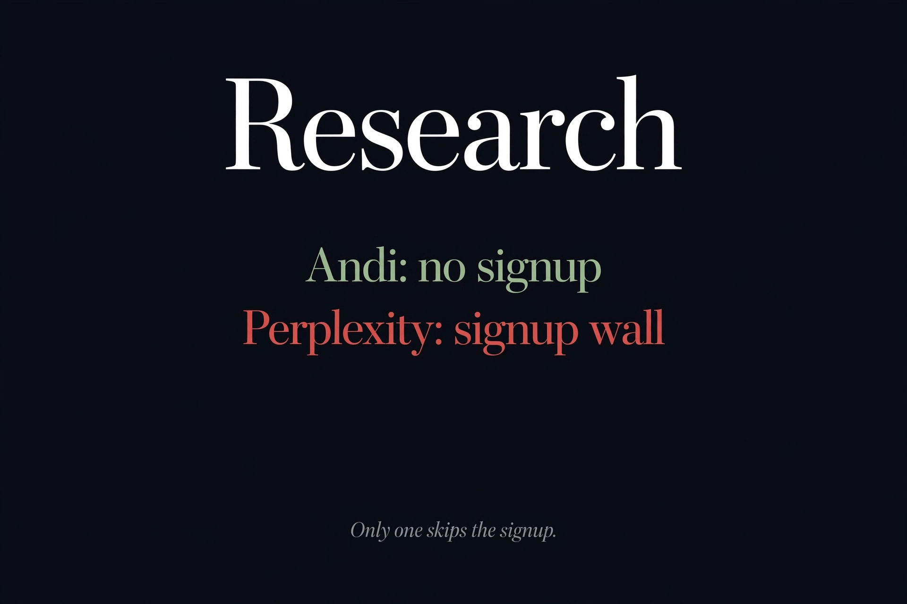

We Tested 3 Free Research AI Agents. Only One Needs No Signup (2026)
Quick answer: Of the three best-known free AI research agents we tested in October 2026, only Andi works with no account at all — unlimited cited answers, no login wall. Perplexity's free tier ($0) now blocks anonymous searches entirely behind signup. You.com killed its consumer search and sells APIs instead.

| Andi | Perplexity | You.com | |
|---|---|---|---|
| Free? | Yes — unlimited | Yes — $0 tier | API only — 100 queries/day via MCP |
| Account needed? | No — no account system exists | Yes — anonymous search blocked | Yes — consumer search discontinued |
| Cited answers | Yes | Yes | — (developer API) |
| Free limits | None found | 3 Pro searches/day, 1 Research/month | $100 signup credit, expires in 60 days |
Andi: the one that asks for nothing
Andi (andisearch.com) is a conversational AI search engine that has been answering questions since 2023 — direct AI-generated answers with source links, zero ads, zero tracking. The remarkable part isn't the answers; it's the absence of everything else. There is no account system. We could not find a login page or a signup button. We searched, followed up, refined queries, and used the Summarize and Explain features as a fully anonymous visitor, and nothing ever asked who we were. Our full Andi review has the details — it also holds a Tier 1 spot in our ranked list of genuinely no-signup agents.
The honest trade-offs: Andi's index is smaller than Google's, so obscure or ultra-fresh queries can come back thin, and there's no personalization (the privacy that protects you also means no tailored results). It pays its inference bills by selling a developer API, not by monetizing your searches — a model worth watching, but working so far.
Perplexity: free, but the anonymous door is closed
This one stung. Perplexity used to allow limited anonymous queries, which is why so many "free AI research" roundups still list it as no-signup friendly. Our October 17, 2026 test tells a different story: clicking the search box as an anonymous visitor immediately pops a login prompt ("log in or sign up free"), and submitting a search anyway returns nothing but "Sign up and repeat your request." No answer without an account. Full stop.
The free tier itself is real — $0, no credit card — and the official help center lists 3 Pro searches per day, 1 Research query per month, and practically unlimited basic searches. But every bit of it sits behind mandatory signup, with no model choice and no API on the free plan. It's a good free product for researchers willing to register; it just doesn't belong on a no-signup list. (Perplexity's own pricing page 404'd during our check; the numbers above come from their official help-center plan comparison, updated October 9, 2026.)
You.com: the consumer product is gone
You.com didn't add a signup wall — it removed the room behind it. The homepage has fully pivoted to "The Leading Web Search APIs for AI," aimed at developers. There is no consumer search box anymore, and visiting you.com/search redirects straight to a signup page offering API credits ($10 to start, $90 more after verification). As a free research agent for end users, You.com no longer exists.
What remains is genuinely free for builders: 100 web search API queries per day via MCP with no API key, no account, and no credit card — signup only when you need more. Registering grants $100 in API credit (valid 60 days), still with no card required. If you're wiring live search into your own agent or app, that's a real free tier; if you just wanted to ask questions in a browser, Andi is where you go now.
What this means if you research without accounts
The pattern is the one our four-meanings-of-free guide keeps confirming: "free" and "no signup" are drifting apart. Perplexity kept the $0 tier and closed the anonymous door; You.com kept a free tier and closed the consumer product. Only the indie — Andi, funded by API revenue rather than growth metrics — still lets a stranger walk in, ask anything, and leave no trace. That won't be true forever, which is exactly why we re-test.
FAQ
Which free AI research agent needs no signup?
Andi (andisearch.com). It has no account system at all — we searched, followed up, and used its Summarize and Explain features as a fully anonymous visitor. Consumer search is free and unlimited, with citations on every answer.
Is Perplexity free without an account?
No. In our October 17, 2026 test, clicking the search box as an anonymous visitor immediately triggered a login prompt, and submitting a search returned only "Sign up and repeat your request." The free tier ($0) requires an account and includes 3 Pro searches per day, 1 Research query per month, and unlimited basic searches.
Is You.com still a free AI search engine?
No. You.com discontinued its consumer search product and now sells search APIs to developers. Its free API tier offers 100 web search queries per day via MCP with no API key, account, or credit card; signing up grants $100 in API credit valid for 60 days.
What's the catch with Andi being free and unlimited?
Andi makes money from a developer API sold pay-as-you-go, not from consumer search. Trade-offs: a smaller index than Google (weaker on obscure or ultra-fresh queries) and no personalization. Long-term monetization is still evolving.
Can I still use Perplexity anonymously like before?
Not anymore. Perplexity previously allowed limited anonymous queries, but our October 2026 test found the search box immediately prompts for login and no answer is returned without an account. If no-signup is your filter, Andi is the remaining option.